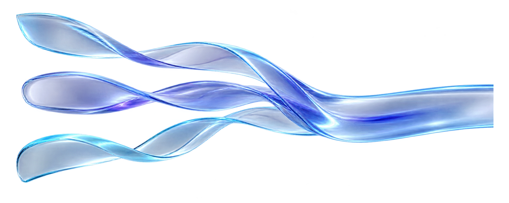
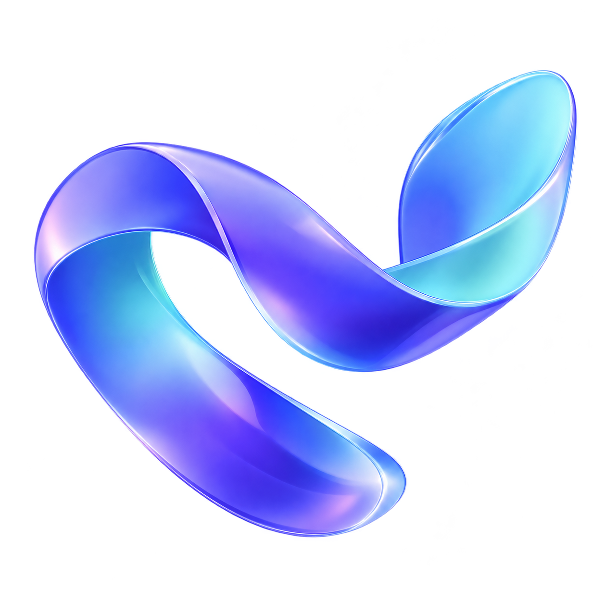

Оригинальные PNG с прозрачностью. Иллюстрация и знак проверяются на двух фонах без изменения исходных файлов.
Жемчужный холст
#F6F7FB · реальные прозрачные пиксели


Яснослед
Глубокий индиго
#111326 · тот же исходный ассет
Яснослед
Иллюстрация служит визуальным образом движения событий. Числа, графики и интерактивные элементы остаются настоящими HTML/SVG-компонентами приложения. PNG сгенерированы встроенным imagegen; видео не генерировалось.